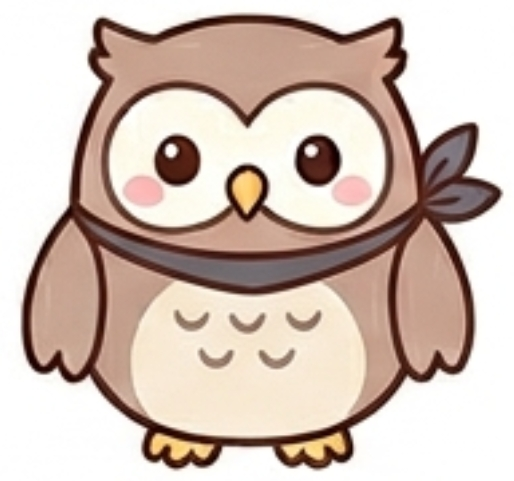

あなたのフレンドタイプは...

BSPD：アサシンフクロウ
あなたは、感情の波に流されることなく、グループの会話や状況を常に一歩引いた視点から客観的に見つめている人です。自分から笑いの中心になろうと無駄なおしゃべりをしたり、その場のノリを加速させるために中身のない同調をしたりすることはあまり多くありません。
内面には非常に強固なロジックや仕組みへのこだわり（頑固さ）を秘めていますが、それを感情的に他人に押し付けることはありません。自分が不用意な発言をして場の空気を壊してしまうことを人一倍気にかけているからこそ、まずは徹底して「聞き手」に回り、周囲の意見を冷静に分析しています。
突飛なボケを仕掛けるタイプではありませんが、他人が感情論で行き詰まったり、会話がグダグダに脱線したりしたときに、最も合理的で誰もが納得せざるを得ない「解決の一言」をボソッと放ち、場を本来のスマートな状態へ引き戻すことができる静かな実力者です。
友達から見たあなたは、ズバリ「普段は静かに話を聞いているけれど、ここぞという時に一言で場をきれいに収めてくれる、知的な軌道修正役」です。
みんなが「次どこ行く？」「どっちの意見が正しい？」と感情的になってダラダラ議論が紛糾しているとき、あなたは基本的には静かにしています。しかし、議論が完全に行き詰まったその瞬間、あなたが「そもそも、前提の条件がズレてるよ。Aプランだと予算が厳しいし、Bプランだと時間が足りない。だからCにするのが一番現実的じゃない？」と、あまりにも的確で無駄のない「事実」を提示し、場を本来の心地よい温度感にスッと戻します。
その無駄のないスマートな立ち回りはまさにアサシンのようで、友達は内心「やっぱりフクロウは全部見透かしてたな」「この人がいると会話が迷子にならないから本当に助かる」と、絶大な信頼を寄せられています。
賢すぎて少しミステリアスなオーラを放っているため、日常のくだらない雑談のときには「フクロウにこんな話してもつまらないかな……」と友達が少し緊張することもありますが、進路やトラブルの解決など「本当に人生で迷ったとき」には、一番に「フクロウの意見を聞いてみたい」と頼りにされています。
全員の感情的なもつれやグダグダした空気を完全に排除し、最も効率的で誰もが納得する「正解」へ場を導き出してくれます。
その場のノリや気まずい空気に流されて意見を変えることがなく、まずは相手の話を最後まで冷静に聞いてくれるため、あなたの言葉には他の誰よりも重い「信頼の価値」があります。
あなたがバックボーンとして控えているだけで、グループ全体の意思決定や問題解決能力がグッと高まります。
あなたの論理的な正しさと場を収める力は最強の武器ですが、時にそれが「人の気持ちを一切無視した、冷酷な言葉」として相手に刺さってしまうことがあります。友達が悩んでいるとき、彼らが求めているのは「正しい解決策」ではなく、ただ「大変だったね」と言ってくれる「共感」であるケースがほとんどです。そこであなたが「それは君の選択ミスだよね」と事実を突きつけてしまうと、相手は心をへし折られ、あなたに本音を話せなくなってしまいます。
周りがあなたに意見を求めてくるのは、あなたの知性と聞き上手なところをリスペクトしているからです。しかし、あまりにも感情を削ぎ落とした対応ばかりしていると、「フクロウの前だと息が詰まる」と、心の距離を置かれてしまいます。
たまには正論をぐっと飲み込み、「それは災難だったね」と中身のないうわべの共感をあえて見せてみたり、自分からくだらないバカ話に乗っかって無防備に笑ってみたりしてください。あなたのその人間らしい「温かみ」が見えたとき、友達は恐怖心なく、あなたに心からの信頼を寄せるようになります。